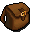
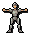
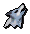
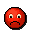
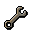
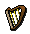

Controls - The Basics
Introduction
RuneScape has a very effective and efficient control system. Once you learn the various aspects of the system, using it becomes second nature.
To explore the glorious lands of RuneScape, move the mouse to where you want to go and click the "default action" mouse button. For single button mice, simply click the button and for 2 or more button mice, the "default action" button is the left mouse button.
![[image]](../img/main/kbase/controls/how_to_move.gif) If this is done correctly, your character will start moving and a small yellow 'X' will flash briefly on the spot where your character will stop.
If this is done correctly, your character will start moving and a small yellow 'X' will flash briefly on the spot where your character will stop.
If the yellow cross appears, but your character doesn't start walking immediately, wait a few seconds, as it may take a few moments before anything happens.
You can make your character run to a spot by holding the 'CTRL' key on your keyboard before clicking where you wish them to move.
If you wish to move around quickly, you can set your character to run for as long as they have energy. This feature can be turned on through the option screen, or by clicking the run energy globe next to the minimap. Read the Options section for more information.
Every single task in RuneScape can be accomplished using the mouse. To perform the default action associated with an item, move the mouse pointer is over the item and click the "action" button. If you are using a mouse with multiple buttons, click the left button. If you are using a single button mouse, click on the button and select the first option from the menu that is displayed.

When you request for an action to be performed, a red cross will briefly appear to indicate that the request was received. You may have to wait a few moments for your character to perform the action. In the image above, the player has asked his character to take the coins lying on the floor.
Items and objects in RuneScape have multiple actions associated with them. To view and select an alternative to the default action of an item or object, a player using a multiple button mouse should click the right mouse button while the mouse pointer is over the item or object. A menu of other actions that can be performed on that item or with the item will be displayed. Single button mouse users are always shown this menu of options.
The Game Window

Name |
Purpose |
| Minimap, compass and world map | A minimap with a compass to help you navigate around RuneScape. The world map globe will open a map of the surface of RuneScape in the game window. |
| Status Globes | A read-out of your drainable statistics (Hitpoints, Prayer, run energy and Summoning - Summoning will only be visible if you are on a members' world and have completed Wolf Whistle). |
| Log Out | The 'X' icon at the top-right of your game window can be used to log yourself out of the game. |
Game window |
The main window that displays your view into RuneScape. |
| Chat window | The lower section of the game window where you can view and respond to other players' messages. There are a number of buttons you can use to customise how you view chat and game information. |
| Control panel | Section to the bottom right of the game window. This allows the player to change and access other aspects of the game. |
Location Indicators
As you approach certain areas in RuneScape, an icon will be displayed in the lower right hand corner of the game window to indicate the type of area it is. The icon will stay there until you leave the area.
Below is a table of all the indicators in RuneScape and their meaning.
| Location indicated | Image | Purpose |
| Duel Arena | Tells the player when they have entered the duelling area. | |
| Multicombat zone | ![[image]](../img/main/kbase/controls/multicombat_symbol.gif) |
Tells the player when they are in an area where they can combat more than one opponent. |
| Rat pits | This icon is displayed while the player is in the Rat Pits. | |
| Wilderness | ![[image]](../img/main/kbase/controls/wilderness.gif) |
This icon is displayed when a player is in the Wilderness. |
Minimap and Status Globes

You can navigate through RuneScape by clicking in the minimap window. This is good for moving further than is possible in the game window view.
To the right of the minimap are a number of status globes giving you easy access to some important information on your Hitpoints, Prayer, run energy and Summoning (if you have completed Wolf Whistle). The numbers they display will change colour as they reduce (from being wounded, using Summoning points, etc.), and the Hitpoints icon will start flashing when it reaches a dangerously low level. You can also click on the run energy globe to turn running on, or the Prayer globe to turn your quick Prayers on or off.
When you rotate the camera, the compass and minimap rotate to reflect which direction you are looking. This may be different from the direction your character is facing or moving.
For example, you can make the camera face north to see what is in that direction while your character is moving to the east.
The minimap displays your immediate surrounding environment which includes buildings, streets, non-player characters, information icons etc.
Information icons are explained in the World Map View section of the Manual.
Below is a table of the colour dots in the minimap and their meaning.
Icon Name |
Meaning |
Red Flag |
Destination of last move command. |
Red Dot |
Items that you can pick up. |
White Dot |
Other human players. |
Green Dot |
Players in your Friends List. |
Yellow Dot |
Monsters and non-player characters. |
Blue Dot |
Other players wearing the same team cape as you. |
Purple Dot |
Other players in your clan chat channel. |
Scenery such as trees, fences and rocks each have specific graphics to make navigating clearer.
Icons are shown on the map to mark certain useful features, including quest start points, banks and the entrances of dungeons.
For more information about the in-game world map, click here.
Control Panel
The control panel is where players interact with their inventory and other aspects of the game. Each icon in the control panel relates to an area of the game you can configure or interact with.
Icon Name |
Hotkey |
Explanation |
Combat |
F1 | Allows you to control your combat strategy. |
Statistics |
F2 | Displays the skills and your current level for each one. |
Quest Journal |
F3 | Displays a list of quests you haven't started, have started but not completed and have completed. |
|  Inventory |
F4 | Gives you access to your inventory of items. |
|  Equipped |
F5 | Gives you access to your equipped inventory. |
Prayers |
F6 | Gives you access to your Prayers. |
Magic Spells |
F7 | Shows the spells you can cast and basic information for them. |
|  Summoning |
None | Information about familiars or Summoning pets. This icon is hidden unless you have a familiar or pet out. |
Friends List |
F8 | Allows you to manage your friends list and communicate privately with them. |
|  Ignore List |
None | Allows you to manage your ignore list. |
Clan Chat |
None | Allows you to manage your clan chat channel for group discussions. |
|  Game Options |
None | Gives you access to various game settings. |
Emotes |
None | Allows you to express emotions or ideas through your character behaving in a certain way (e.g. waving, dancing, etc.). |
|  Music Player |
None | Gives you access to the music player and songs available to play. |

|
More articles in Controls
|
|
|
Further Help
If this article does not help you, you may find the following sections of the RuneScape site helpful:
|
|